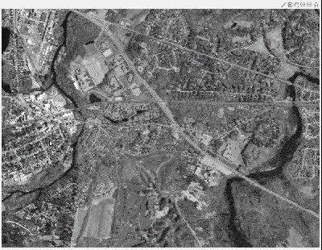

Home
此示例说明如何使用线 ROI 来测量图像中的距离。您还可以将测量值校准为真实世界的值并指定单位。该示例说明了如何在无需进入任何特定绘图模式的情况下无缝添加、编辑和删除 ROI。
将图像读入工作区并显示图像
将图像读入工作区。
im = imread('concordorthophoto.png');
获取有关图像的数据，例如其大小，并将数据存储在可以传递给回调函数的结构中。
sz = size(im); myData.Units = 'pixels'; myData.MaxValue = hypot(sz(1),sz(2)); myData.Colormap = hot; myData.ScaleFactor = 1;
显示图像。
hIm = imshow(im);
为图像上的ButtonDownFcn指定回调函数。将myData结构传递给回调函数。此回调函数创建线对象并开始绘制 ROI。
hIm.ButtonDownFcn = @(~,~) startDrawing(hIm.Parent,myData);
创建回调函数以开始绘制 ROI
创建与ButtonDownFcn回调一起使用的函数以创建线 ROI。该函数：
实例化一个线 ROI 对象。
设置侦听器以对 ROI 的点击和移动做出反应。
向包含“全部删除”选项的 ROI 添加自定义上下文菜单。
开始绘制 ROI，以图像中单击的点为起点。
function startDrawing(hAx,myData)
% Create a line ROI object. Specify the initial color of the line and
% store the |myData| structure in the |UserData| property of the ROI.
h = images.roi.Line('Color',[0, 0, 0.5625],'UserData',myData);
% Set up a listener for movement of the line ROI. When the line ROI moves,
% the |updateLabel| callback updates the text in the line ROI label and
% changes the color of the line, based on its length.
addlistener(h,'MovingROI',@updateLabel);
% Set up a listener for clicks on the line ROI. When you click on the line
% ROI, the |updateUnits| callback opens a GUI that lets you specify the
% known distance in real-world units, such as, meters or feet.
addlistener(h,'ROIClicked',@updateUnits);
% Get the current mouse location from the |CurrentPoint| property of the
% axes and extract the _x_ and _y_ coordinates.
cp = hAx.CurrentPoint;
cp = [cp(1,1) cp(1,2)];
% Begin drawing the ROI from the current mouse location. Using the
% |beginDrawingFromPoint| method, you can draw multiple ROIs.
h.beginDrawingFromPoint(cp);
% Add a custom option to the line ROI context menu to delete all existing
% line ROIs.
c = h.UIContextMenu;
uimenu(c,'Label','Delete All','Callback',@deleteAll);
end

创建回调函数以更新 ROI 标签和颜色
创建在 ROI 线移动时（即'MovingROI'事件发生时）调用的函数。此函数使用线的长度更新 ROI 标签，并根据线的长度更改线的颜色。
当 ROI 移动时，会重复调用此函数。如果您只想在移动完成后更新 ROI，请改为监听'ROIMoved'事件。
function updateLabel(src,evt) % Get the current line position. pos = evt.Source.Position; % Determine the length of the line. diffPos = diff(pos); mag = hypot(diffPos(1),diffPos(2)); % Choose a color from the color map based on the length of the line. The % line changes color as it gets longer or shorter. color = src.UserData.Colormap(ceil(64*(mag/src.UserData.MaxValue)),:); % Apply the scale factor to line length to calibrate the measurements. mag = mag*src.UserData.ScaleFactor; % Update the label. set(src,'Label',[num2str(mag,'%30.1f') ' ' src.UserData.Units],'Color',color); end
创建回调函数以更新测量单位
创建双击 ROI 标签时调用的函数。此功能打开一个弹出对话框，您可以在其中输入有关实际距离和单位的信息。
该函数监听'ROIClicked'事件，使用事件数据来检查点击的类型和被点击的 ROI 部分。
弹出对话框提示您输入此测量的已知距离和单位。使用此信息，您可以将所有 ROI 测量值校准为真实世界单位。
function updateUnits(src,evt)
% When you double-click the ROI label, the example opens a popup dialog box
% to get information about the actual distance. Use this information to
% scale all line ROI measurements.
if strcmp(evt.SelectionType,'double') && strcmp(evt.SelectedPart,'label')
% Display the popup dialog box.
answer = inputdlg({'Known distance','Distance units'},...
'Specify known distance',[1 20],{'10','meters'});
% Determine the scale factor based on the inputs.
num = str2double(answer{1});
% Get the length of the current line ROI.
pos = src.Position;
diffPos = diff(pos);
mag = hypot(diffPos(1),diffPos(2));
% Calculate the scale factor by dividing the known length value by the
% current length, measured in pixels.
scale = num/mag;
% Store the scale factor and the units information in the |myData|
% structure.
myData.Units = answer{2};
myData.MaxValue = src.UserData.MaxValue;
myData.Colormap = src.UserData.Colormap;
myData.ScaleFactor = scale;
% Reset the data stored in the |UserData| property of all existing line
% ROI objects. Use |findobj| to find all line ROI objects in the axes.
hAx = src.Parent;
hROIs = findobj(hAx,'Type','images.roi.Line');
set(hROIs,'UserData',myData);
% Update the label in each line ROI object, based on the information
% collected in the input dialog.
for i = 1:numel(hROIs)
pos = hROIs(i).Position;
diffPos = diff(pos);
mag = hypot(diffPos(1),diffPos(2));
set(hROIs(i),'Label',[num2str(mag*scale,'%30.1f') ' ' answer{2}]);
end
% Reset the |ButtonDownFcn| callback function with the current |myData|
% value.
hIm = findobj(hAx,'Type','image');
hIm.ButtonDownFcn = @(~,~) startDrawing(hAx,myData);
end
end
创建回调函数以删除所有 ROI
创建删除所有 ROI 的函数。在startDrawing回调函数中，向每条线 ROI 添加了一个自定义上下文菜单项。这是与该自定义上下文菜单关联的回调。此回调使用findobj函数搜索 ROI 类型并删除任何找到的 ROI。
function deleteAll(src,~) hFig = ancestor(src,'figure'); hROIs = findobj(hFig,'Type','images.roi.Line'); delete(hROIs) end
======================================================================
我的测试结果及程序
下面是我测试的代码：

注：本文根据MATLAB官网内容修改而成。